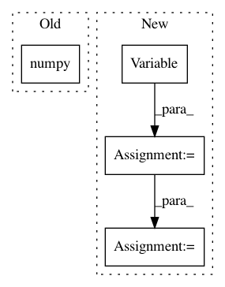

192e33a99505947aedd3dd8b081d71b04f14eb85,examples/equivariance_error/main.py,,,#,34
Before Change
y2 = foo(so3_rotation(x, alpha, beta, gamma))
y = y.data.cpu().numpy()
y1 = y1.data.cpu().numpy()
y2 = y2.data.cpu().numpy()
relative_error = np.std(y1 - y2) / np.std(y)
After Change
return torch.cat([x[:, :, :, n:], x[:, :, :, :n]], dim=3)
// Create random input
x = torch.autograd.Variable(torch.randn(1, 12, 128, 128), volatile=True).cuda() // [batch, feature, beta, alpha]
y = phi(x)
y1 = rot(phi(x), angle=45)
y2 = phi(rot(x, angle=45))
relative_error = torch.std(y1.data - y2.data) / torch.std(y.data)
In pattern: SUPERPATTERN
Frequency: 3
Non-data size: 4
Instances
Project Name: jonas-koehler/s2cnn
Commit Name: 192e33a99505947aedd3dd8b081d71b04f14eb85
Time: 2017-10-30
Author: geiger.mario@gmail.com
File Name: examples/equivariance_error/main.py
Class Name:
Method Name:
Project Name: dpressel/mead-baseline
Commit Name: 02ef279b852bad53771e02435d0caa0a64d17343
Time: 2020-09-02
Author: dpressel@gmail.com
File Name: baseline/tf/classify/training/distributed.py
Class Name: ClassifyTrainerDistributedTf
Method Name: _test
Project Name: ClementPinard/FlowNetPytorch
Commit Name: c6a079c70368b41873f3288b05b74d38f74b6680
Time: 2018-03-30
Author: clement.pinard@parrot.com
File Name: run_inference.py
Class Name:
Method Name: main